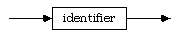

The term Generic Modula-2 refers to a set of extensions to the base language that allow for programmers to create and refine generic separate modules or templates.
The word GENERIC is added to the list of keywords for the base language.
compilation module (see A.2.2.1.1)
local module declaration (see A.2.2.2.9)
generic definition module
generic implementation module
refining definition module
refining implementation module
generic separate module identifier
formal module parameters
formal module parameter list
formal module parameter

constant value parameter specification
type parameter specification
refining local module declaration (see A.2.2.2.9)
actual modual parameters
formal module parameter list
actual parameter
keyword = base language keyword | "GENERIC" ; compilation module = program module | definition module | implementation module | generic definition module | generic implementation module | refining definition module | refining implementation module ; local module declaration = Base Language local module declaration | refining local module declaration ;
The concrete syntax in this section is taken from ISO/IEC IS 10514-2, the international standard for the generic extensions to Modula-2.
generic definition module =
"GENERIC", "DEFINITION", "MODULE", module identifier, [formal module parameters], semicolon,
import lists, definitions,
"END", module identifier, period ;
generic implementation module =
"GENERIC", "IMPLEMENTATION", "MODULE", module identifier, [interrupt protection], [formal module parameters], semicolon,
import lists, module block,
module identifier, period ;
refining definition module =
"DEFINITION", "MODULE", module identifier, equals, generic separate module identifier, [actual module parameters], semicolon,
"END", module identifier, period ;
refining implementation module =
"IMPLEMENTATION", "MODULE", module identifier, equals, generic separate module identifier, [actual module parameters], semicolon,
"END", module identifier, period ;
generic separate module identifier =
identifier ;
formal module parameters =
left parenthesis, formal module parameter list, right parenthesis ;
formal module parameter list =
formal module parameter, {semicolon, formal module parameter} ;
formal module parameter =
constant value parameter specification| type parameter specification
constant value parameter specification =
identifier list, colon, formal type;
type parameter specification =
identifier list, colon, "TYPE" ;
refining local module declaration =
"MODULE", module identifier, equals, generic separate module identifier, [actual module parameters], semicolon,
[export list],
"END", module identifier ;
actual module parameters =
left parenthesis, actual module parameter list, right parenthesis ;
actual parameter list =
actual parameter, {comma, actual parameter} ;
actual parameter =
constant expression | type parameter ;